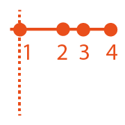
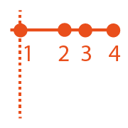

Visualizing Quantities & Events Over Time
From Analysis to Communication, For Displays Both Large & Small
Matthew Brehmer · InfoVis + HCI Researcher · mattbrehmer.github.io
Presentation at Chatham Labs 2019-04-25 · slides: mattbrehmer.github.io/talks/chatham190425
Outline
· My background, methods, & inspiration
· A time series visualization client project
· Expressive information design with timelines
· Visualizing time-oriented data on mobile devices
· Current research interests
My Background
2016 - 2019: Postdoctoral Researcher specializing in InfoVis + HCI, Microsoft Research
2011 - 2016: PhD Computer Science specializing in Information Visualization, UBC
2009 - 2011: MSc Computer Science specializing in Human-Computer Interaction, UBC
2004 - 2009: Bachelor of Computing specializing in Cognitive Science, Queen's Univ.
Scope of My PhD & Postdoc Research
Visualization task analysis:
· A Typology of Abstract Visualization Tasks - TVCG 13 | Visualizing Dimensionally-Reduced Data - BELIV 14
Evaluating visualization (tools):
· Data-Driven Stories - DDS 18 | Visualization Authoring Systems - BELIV 18 | Variants of Multi-Series Bar Charts - CHI 18 |
· Overview: A Document Mining Tool for Journalists - TVCG 14 | Pre-Design Empiricism for Visualization - BELIV 14
Time series visualization:
· Workflows for Energy Portfolio Analysis - TVCG 16
Considerations & tools for expressive information design:
· Timeline Storyteller - C+J 19 | DataToon - CHI 19 | Charticulator - TVCG 19 | ChartAccent - PVIS 17 | Timelines Revisited - TVCG 17 | TimeLineCurator - TVCG 16
Visualizing time-oriented data on mobile devices:
· Ranges Over Time - TVCG 19 | Animation vs. Small Multiples - in review | Novel Interactions with Time-Oriented Data on Mobile Devices - in preparation
Scope of My PhD & Postdoc Research
Visualization task analysis:
· A Typology of Abstract Visualization Tasks - TVCG 13 | Visualizing Dimensionally-Reduced Data - BELIV 14
Evaluating visualization (tools):
· Data-Driven Stories - DDS 18 | Visualization Authoring Systems - BELIV 18 | Variants of Multi-Series Bar Charts - CHI 18 |
· Overview: A Document Mining Tool for Journalists - TVCG 14 | Pre-Design Empiricism for Visualization - BELIV 14
Time series visualization:
· Workflows for Energy Portfolio Analysis - TVCG 16
Considerations & tools for expressive information design:
· Timeline Storyteller - C+J 19 | DataToon - CHI 19 | Charticulator - TVCG 19 | ChartAccent - PVIS 17 | Timelines Revisited - TVCG 17 | TimeLineCurator - TVCG 16
Visualizing time-oriented data on mobile devices:
· Ranges Over Time - TVCG 19 | Animation vs. Small Multiples - in review | Novel Interactions with Time-Oriented Data on Mobile Devices - in preparation
Design & Research Methods
Design & Implementation:
· User interface design | Visualization design & development
Qualitative Research:
· Visualization design studies (client projects) | Requirements analysis | Retrospective interviews
· Chauffeured demos | Think-aloud protocols | Post-deployment usage analysis
Quantitative Research:
· Laboratory experiments | Crowdsourced experiments | Statistical analysis
Visualization Task Analysis
A Multi-Level Typology of Abstract Visualization Tasks. Brehmer and Munzner.
In IEEE Transactions on Visualization and Computer Graphics (InfoVis 2013).
 Icons by Eamonn Maguire (cc by) for Munzner's Visualization Analysis & Design (CRC Press, 2014).
Icons by Eamonn Maguire (cc by) for Munzner's Visualization Analysis & Design (CRC Press, 2014).
Visualization Task Analysis
A Multi-Level Typology of Abstract Visualization Tasks. Brehmer and Munzner.
In IEEE Transactions on Visualization and Computer Graphics (InfoVis 2013).
The most cited IEEE InfoVis paper since 2013, with more than 300 citations*.
 * Google Scholar, Apr 2019.
* Google Scholar, Apr 2019.Icons by Eamonn Maguire (cc by) for Munzner's Visualization Analysis & Design (CRC Press, 2014).
Goal: Enabling Information Visualization
How can I enable people to visualize their data in context-appropriate ways?
From public presentation via large displays to individual consumption via mobile displays.
Applications of visualization beyond those in professional data analysis.
Inspiration: Connecting Research & Practice
Disseminating visualization research into practice, and vice versa.
Promoting and studying the adoption of deployed visualization tools and research prototypes.
Collecting examples of visualization design by practitioners (e.g., news graphics designers).
Fostering a dialogue between researchers and practitioners (e.g., OpenVisConf, VisInPractice)*. * OpenVisConf: openvisconf.com | VisInPractice event at IEEE VIS: VisInPractice.github.io .
Outline
· My background, methods, & inspiration
· A time series visualization client project - TVCG 16
· Expressive information design with timelines
· Visualizing time-oriented data on mobile devices
· Current research interests
Energy Usage in Building Portfolios
Matches, Mismatches, and Methods: Multiple-View Workflows for Energy Portfolio Analysis.
Brehmer, Ng, Tate, and Munzner. In IEEE TVCG 2016 (InfoVis 2015).
Given a portfolio of buildings (e.g., a university campus, a hotel / restaurant chain):
· Summarize energy usage patterns across the portfolio,
· Drill Down from the portfolio to a subset of buildings,
· Identify anomalies and buildings in need of energy-saving interventions,
· Compare buildings to one another, or before / after events & interventions,
Reduce energy consumption and save money.
Our Partner Company's Existing Tool

Little support for summarizing energy usage across a portfolio (no overview).
Clients did not trust / understand predictions and could not easily make comparisons.
Clients were using tool's export feature to do their own analysis in Excel.
Evaluating Alternative Design Choices

Many design choices considered (e.g., faceted boxplots, bar + bump plots, stacked area charts, faceted line graphs, calendar tile matrix, ...).
Established conventions in energy management limited the use of bar charts and line graphs.
However, clients were unfamiliar with alternative design choices.
Chauffeured Sandbox Demos with Clients

Built a web-based sandbox visualization tool (incl. aggregation, filtering, & normalization).
Conducted chauffeured demos with clients with their own portfolio data.
Identified multiple-view workflows (juxtaposition, sequencing) that addressed clients' tasks.
Results: Realization in Partner's Software
Based on my research with clients, the partner company incorporated my designs into their tool.
Juxtaposing unfamiliar choices (tile matrix and boxplots) superior to either in isolation.
Drill-down from tile matrix to faceted bar charts and line graphs respected domain conventions.
Results: Realization in Partner's Software
Matches, Mismatches, and Methods: Multiple-View Workflows for Energy Portfolio Analysis.
Brehmer, Ng, Tate, and Munzner. In IEEE TVCG 2016 (InfoVis 2015).
Segue: From Time Series to Timelines
· From PhD to postdoctoral research,
And...
· From quantities to events over time,
· From analysis to communication.
Outline
· My background, methods, & inspiration
· A time series visualization client project
· Expressive information design with timelines - TVCG 17, C+J 19
· Visualizing time-oriented data on mobile devices
· Current research interests
The Daily Routines of Famous Creative People
Story inspired by infographics by Podio and info we trust (RJ Andrews).Data source: Daily Rituals: How Artists Work by Mason Currey (2013)
Expressive Information Design with Timelines
Timeline Storyteller: The Design & Deployment of an Interactive Authoring Tool for
Expressive Timeline Narratives.
Brehmer, Lee, Henry Riche, Tittsworth, Lytvynets, Edge, and White. In Proc. Comp. + Journalism 2019.

timelinestoryteller.com | github.com/Microsoft/timelinestoryteller
Timelines Revisited
Timelines Revisited: A Design Space and Considerations for Expressive Storytelling.
Brehmer, Lee, Bach, Henry Riche, and Munzner. In IEEE TVCG (presented at InfoVis 2017).
Timelines are visual representations of categorical event sequences.
How have people drawn timelines over the course of history?
The visualization research community has focused on their use in data analysis.
How have practitioners used them for storytelling?
... A survey of 250+ timelines and timeline tools.
A Timeline Design Space
Timelines Revisited: A Design Space and Considerations for Expressive Storytelling.
Brehmer, Lee, Bach, Henry Riche, and Munzner. In IEEE TVCG (presented at InfoVis 2017).
Representation


Scale
 



Layout


Considerations for Storytelling with Timelines
Timelines Revisited: A Design Space and Considerations for Expressive Storytelling.
Brehmer, Lee, Bach, Henry Riche, and Munzner. In IEEE TVCG (presented at InfoVis 2017).
timelinesrevisited.github.io
Different combinations of representation, time scale, and layout serve different communicative tasks.
Anticipate chronological or non-chronological narratives.
Incrementally reveal visual elements, selectively highlighting and annotating to direct attention.
These considerations led to the development of Timeline Storyteller.
The Authoring Interface of Timeline Storyteller
Web version imports CSV, JSON, GSheet. Power BI version imports various data formats.
Web version exports PNG, SVG, GIF, JSON spec. Power BI version exports PBIX, iFrame.
The Impact of Timeline Storyteller
 Demo by a customer during the opening keynote of the 2017 Data Insights Summit
Demo by a customer during the opening keynote of the 2017 Data Insights SummitDemos / talks at Tapestry, OpenVisConf, the Dublin Data Summit, and the Future of Storytelling.
A storytelling contest with the Power BI community (via the Microsoft Data Journalism Team).
Over 36,000 downloads of the Power BI version as of end of 2018.
Timeline Storyteller: Conclusions & Opportunities
Timeline Storyteller: The Design & Deployment of an Interactive Authoring Tool for
Expressive Timeline Narratives.
Brehmer, Lee, Henry Riche, Tittsworth, Lytvynets, Edge, and White. In Proc. Comp. + Journalism 2019.
No prior interactive tools for presenting expressive timeline narratives.
The first to incorporate multi-scene stories with multiple visual representation choices.
Incrementally reveal + transform; selectively highlight + annotate; applicable to other data types.
Future Work: Recommend design choices and annotations based on properties of the dataset.
Outline
· My background, methods, & inspiration
· A time series visualization client project
· Expressive information design with timelines
· Visualizing time-oriented data on mobile devices - TVCG 19
· Current research interests
Experiment 1: Ranges over Time on Mobile Phones
Visualizing Ranges over Time on Mobile Phones: A Task-Based Crowdsourced Evaluation.
Brehmer, Lee, Isenberg, and Choe. In IEEE TVCG 2019 (InfoVis 2018).

aka.ms/ranges-tvcg
Ranges in Sleep Tracking Apps
 Apps: Azumio Sleep Time · Garmin Connect · Bedtime (iOS Clock) .
Apps: Azumio Sleep Time · Garmin Connect · Bedtime (iOS Clock) .
Ranges in Weather Apps
 Apps: Dark
Sky · Weathertron · Weather Line .
Apps: Dark
Sky · Weathertron · Weather Line .
Ranges and Radial Representations
 Image: Weather Radials (by Timm Kekeritz) .
Image: Weather Radials (by Timm Kekeritz) .
 Images: mobileinfovis.com by Sebastian Sadowski, 2018.
Images: mobileinfovis.com by Sebastian Sadowski, 2018.
A Crowdsourced Experiment on Mobile Phones
The first crowdsourced visualization evaluation study performed exclusively on phones. Image: newkemall (flickr, cc by).
Thinking Systematically About Tasks
Tasks derived from:
A Multi-Level Typology of Abstract Visualization Tasks.
Brehmer and Munzner. In IEEE TVCG (InfoVis 2013):
· Locate Dates
· Identify Values
· Locate Extreme Values
· Compare Values
· Compare Ranges
Dependent Measures
For each trial:
Trial completion time
Response accuracy
At each level of granularity:
Preference: Linear or Radial
Confidence: Low to High
Participants
Temperature (N = 40), Sleep (N = 47)
84 trials per participant, using their own phone.
Radial or Linear?
Detailed statistics are provided in:
Visualizing Ranges over Time on Mobile Phones: A Task-Based Crowdsourced Evaluation.
Brehmer, Lee, Isenberg, and Choe. In IEEE TVCG 2019 (InfoVis 2018).
aka.ms/ranges-tvcg
People are, in general, slower with radial representations.
Accuracy appears to be data- and task-dependent:
e.g., less accurate with radial when identifying and locating values in absence of seasonal variation.
People prefer and are more confident with linear representations.
Week vs. Month vs. Year
Detailed statistics are provided in:
Visualizing Ranges over Time on Mobile Phones: A Task-Based Crowdsourced Evaluation.
Brehmer, Lee, Isenberg, and Choe. In IEEE TVCG 2019 (InfoVis 2018).
aka.ms/ranges-tvcg
People are typically slower with a month than with a week of ranges.
For some tasks, people were less accurate with a month than with a year.
e.g., seasonal variation in annual temperature appears to be beneficial for locating extreme values.
Ranges Over Time on Mobile Phones: Conclusions
Is a cycle meaningful in the context of the data?
Does the task involve locating values? Or comparing them?
Is efficiency important?
Locating values quickly? Choose Linear.
Comparing values (and unconcerned with speed)? Choose Radial or Linear.
aka.ms/ranges | (mobile only) experimental app.
github.com/Microsoft/RangesOnMobile | open source app and analysis.
Experiment 2: Animation vs. Small Multiples
A Comparative Eval. of Animation & Small Multiples for Trend Visualization on Mobile Phones.
M. Brehmer, B. Lee, P. Isenberg, and E. K. Choe. (InfoVis 2019 Submission).


Highlights: Animation or Small Multiples?
Results question the "small multiples on the desktop, animation on the phone" design pattern.
Surprisingly, small multiples are still viable on small displays.
They may be particularly well suited for distance and angle comparisons.
Animation and small multiples are comparably accurate in many cases.
Animation may be preferable for cases of outlier trajectories and reversals.
aka.ms/multiples | (mobile only) experimental app.
github.com/Microsoft/MobileTrendVis | open source app and analysis.
Outline
· My background, methods, & inspiration
· A time series visualization client project
· Expressive information design with timelines
· Visualizing time-oriented data on mobile devices
· Current research interests
Opportunities for Expressive Information Design
New input modalities for expressive information design, annotation, and presentation.
Pen + Touch Interaction for Authoring Data Comics
DataToon: Drawing Dynamic Network Comics With Pen + Touch Interaction.
Kim, Henry Riche, Bach, Xu, Brehmer, Hinckley, Pahud, Xia, McGuffin, and Pfister. In Proc. CHI 2019.
 aka.ms/DataToon
aka.ms/DataToon
Expressive Timeline Design with Pen + Touch Input
Images L to R: narrative diagram by Kurt Vonnegut, "board game"-like timeline by Matthew Lee, timeline by Mark Twain, Vonnegut drawing a narrative, a curve timeline in Timeline Storyteller.
Goal: Enabling Information Visualization
How can I enable people to visualize their data in context-appropriate ways?
From public presentation via large displays to individual consumption via mobile displays.
Applications of visualization beyond those in professional data analysis.
Visualizing Quantities & Events Over Time
From Analysis to Communication, For Displays Both Large & Small
Matthew Brehmer · InfoVis + HCI Researcher · mattbrehmer.github.io
mattbrehmer.github.io/talks/chatham190425 | slides Presentation at Chatham Labs 2019-04-25